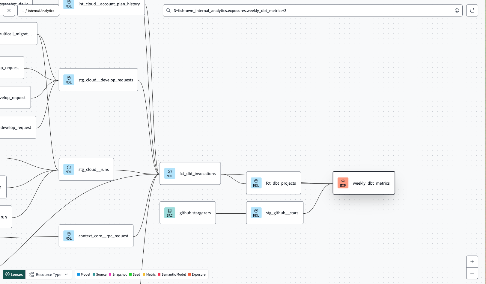

The dbt DAG you’ve built so far ends at the marts layer: fct_orders and dim_customers. From dbt’s perspective, those are the leaves of the tree. But in reality, something downstream uses those models — a Tableau dashboard, a Looker explore, a Python notebook, a customer-facing API. dbt itself doesn’t know about that downstream usage.
Exposures are the YAML construct that tells dbt about it.
An exposure is a node in the dbt project that represents a downstream consumer of your data. It’s metadata-only: no SQL, no warehouse object. Its job is to:
dbt docs so anyone reading the lineage page can see “this dashboard depends on fct_orders.”owner.name, owner.email) so when a model breaks, you know who to ping.dbt run --select +exposure:orders_dashboard — “rebuild everything orders_dashboard depends on.”Exposures live in any .yml file under models/ (typically a dedicated _exposures.yml):
version: 2
exposures:
- name: orders_dashboard
label: "Orders Operational Dashboard"
type: dashboard
maturity: high
url: https://example.com/dashboards/orders
description: "Daily order volume, revenue, and status breakdown."
depends_on:
- ref('fct_orders')
- ref('dim_customers')
owner:
name: Data Team
email: data@example.com
The required fields are name and owner.name. Everything else is optional but conventionally always set:
| Field | Why it matters |
|---|---|
label |
A human-friendly display name for the docs site. |
type |
One of dashboard, notebook, analysis, ml, application. Determines the icon in the lineage view. |
maturity |
One of high, medium, low. Signals to viewers how reliable / production-grade this consumer is. |
url |
Direct link to the BI tool / notebook. The docs site renders this as a clickable link. |
description |
What this consumer does, business-side. Same role as a model’s description. |
depends_on |
List of ref() calls or source() calls to upstream nodes. Establishes the lineage edge. |
owner |
At minimum a name. Adding email (or other meta fields) is standard. |
When dbt parse runs:
.yml under model-paths:.exposures: block and registers each entry as a node in target/manifest.json under exposures.<unique_id>.depends_on: entries — for each ref('foo'), dbt records an edge from foo to the exposure.dbt ls --resource-type exposure and in the docs site’s lineage graph as a downstream node.After dbt docs generate, the docs UI shows a new node colored differently from models (typically with the icon matching type:). Clicking it shows the description, owner, URL, and the upstream models it depends on.
dbt run --select +exposure:orders_dashboard rebuilds everything upstream of the exposure. dbt run --select +fct_orders+ (with two + signs) shows downstream impact, including the exposure node.The pragmatic rule: add an exposure for every BI dashboard, notebook, or downstream system that a stakeholder cares about. If a column rename in fct_orders would break a Tableau dashboard, that dashboard deserves an exposure entry. The cost is one YAML block; the payoff is that anyone running dbt run --select +fct_orders+ immediately sees the dashboard would be affected.
In real projects, exposures get out of sync with reality — dashboards get retired, ownership rotates. The maturity field is partly a confession of that: a low maturity exposure is “we know about this, no commitment to the contract.”
ref() should go. depends_on: ['fct_orders'] (a string list) doesn’t establish a lineage edge — it’s just metadata. Use depends_on: [ref('fct_orders')] so dbt registers the dependency.version: 2 at the top of the YAML file. dbt rejects schema YAML without it.model-paths:. Exposures only get picked up if the file lives under a directory listed in model-paths: (default models). A file at the project root is invisible.type: values. dashboard, notebook, analysis, ml, application are the only accepted values. Typos like dashboards (plural) error at parse time.Press n to start the exercise.
1. From the repo root, create the new YAML file:
touch dbt_project/models/_exposures.yml
2. Paste this into _exposures.yml:
version: 2
exposures:
- name: orders_dashboard
label: "Orders Operational Dashboard"
type: dashboard
maturity: high
url: https://example.com/dashboards/orders
description: "Daily order volume, revenue, and status breakdown for the operations team."
depends_on:
- ref('fct_orders')
- ref('dim_customers')
owner:
name: Data Team
email: data@example.com
Notice the depends_on: list uses ref(...) calls (Jinja expressions evaluated at parse time), not string literals. That’s how dbt establishes the lineage edge from the upstream models to the exposure.
3. Refresh the manifest + catalog so the docs site picks up the new exposure:
cd dbt_project
dbt docs generate
You should see the regular generate output, plus the manifest now contains the exposure node.
4. Confirm the exposure landed:
dbt ls --resource-type exposure
Should print one line: dbt_project.orders_dashboard.
5. (Optional, to see it in the docs UI.) Run dbt docs serve and open the lineage view — fct_orders and dim_customers should now have an arrow pointing to a new orders_dashboard node colored differently from the model nodes.
6. Press v to verify.
dbt docs generate exits 0 and refreshes both manifest.json and catalog.json.target/manifest.json contains an exposure named orders_dashboard.depends_on.nodes lists both fct_orders and dim_customers.| Symptom | Fix |
|---|---|
Exposure 'orders_dashboard' not found in target/manifest.json |
The YAML file isn’t in the right place or didn’t parse. The path must be exactly dbt_project/models/_exposures.yml (any .yml under models/ works, but _exposures.yml is the convention). |
Compilation Error: Invalid version 'version' for ... |
Missing version: 2 at the top of the YAML. |
Exposure 'orders_dashboard' does not depend on model 'fct_orders' |
The depends_on: entries are strings instead of ref() calls. Change 'fct_orders' to ref('fct_orders'). |
Compilation Error: 'dashboard' must be one of ... |
The type: value is misspelled. Allowed: dashboard, notebook, analysis, ml, application. |
Compilation Error: 'owner' must contain a 'name' |
The owner: block is missing the name: key. email: is optional but name: is required. |
Press n. The last Stage 5 exercise covers dbt_utils — installing the community package and using one of its macros.